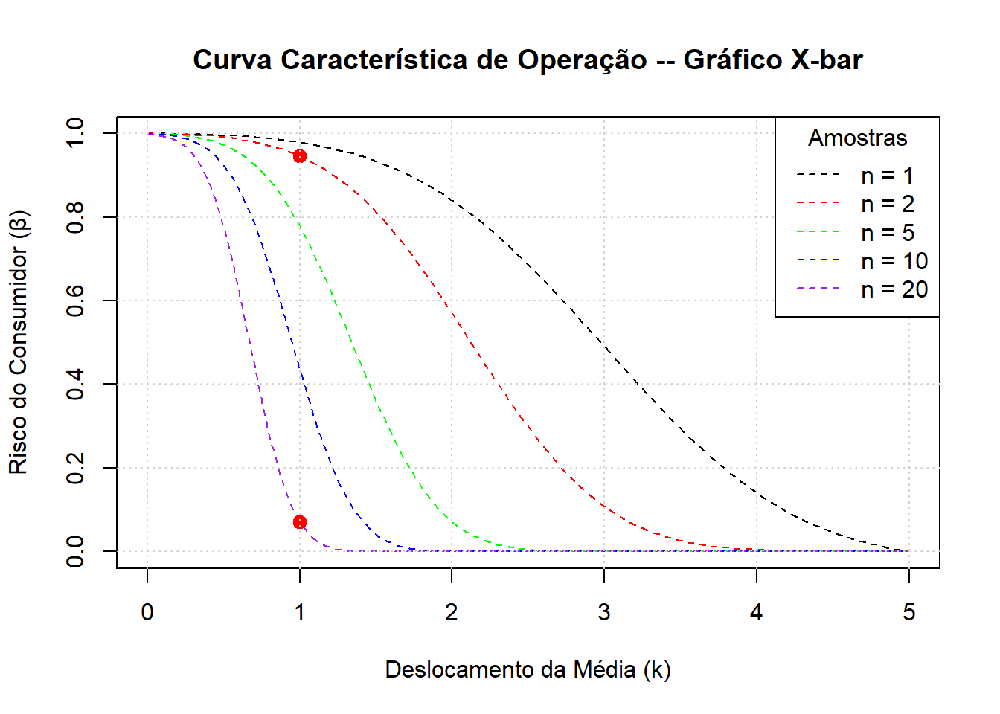
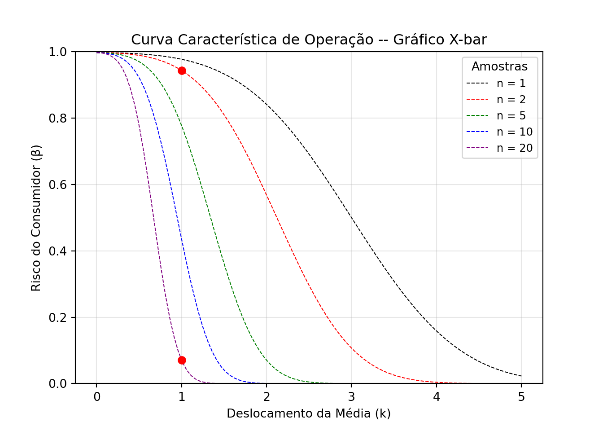
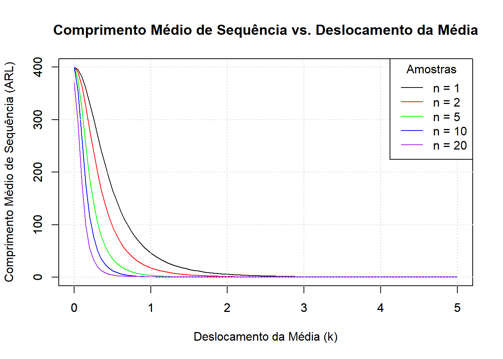
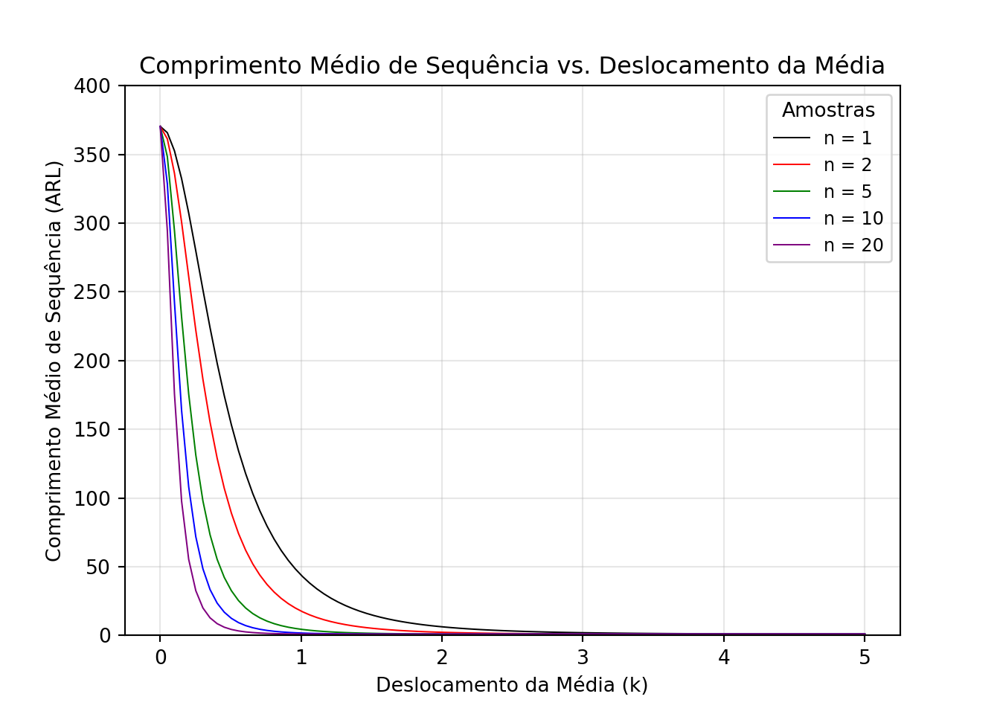
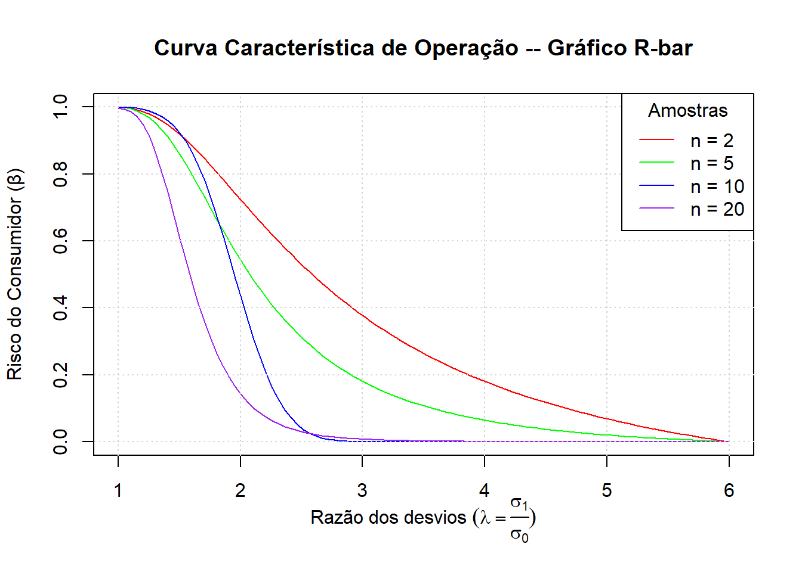
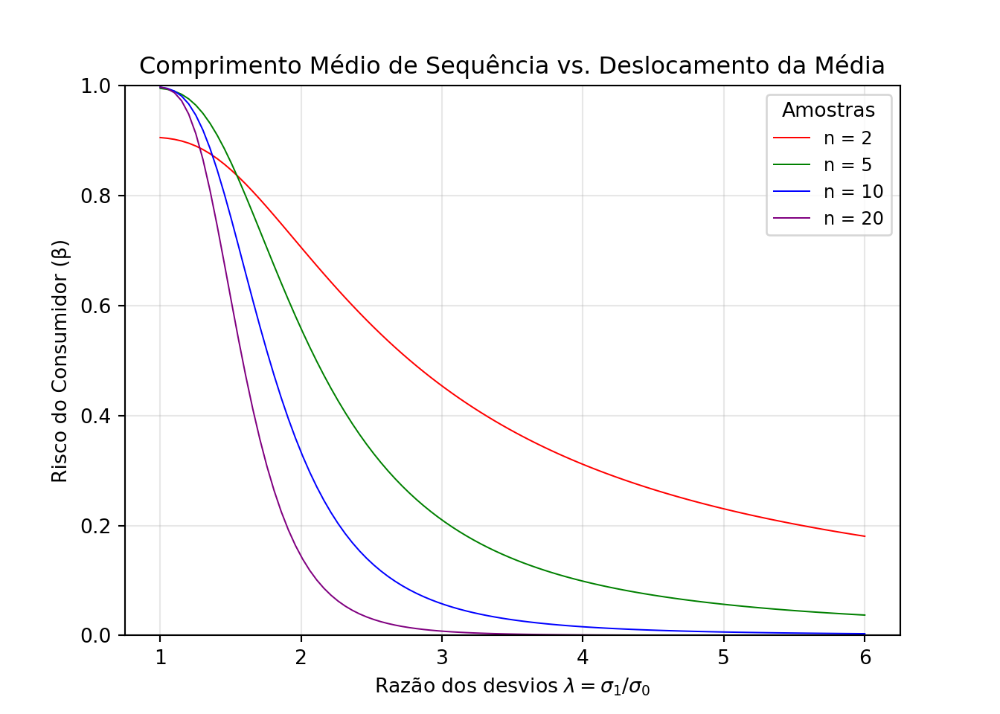

Código
import numpy as np
from scipy.stats import norm
L = 3 ; k = 2
beta = norm.cdf(L - k*np.sqrt(5)) - norm.cdf(-L - k*np.sqrt(5))
print(round(beta, 4))0.0705Especificar o plano amostral, a frequência de coleta e os limites de controle de um processo são algumas das decisões críticas na construção de gráficos de controle. Na inviabilidade de inspecionar todos os itens produzidos, são selecionados uma certa quantidade por lote de forma aleatória para composição das amostras. Naturalmente, quanto mais itens amostrados, maior a aproximação da representação real do processo e consequente maior controle. Logo, as alternativas viáveis são, ou tomar amostras pequenas com maior frequência, ou amostras grandes com menor frequência (Carpinetti 2003; Montgomery 2012).
A depender do número defeitos presentes, o lote pode ser aceito ou rejeitado, parelho ao teste de hipóteses:
\[ \left\{ \begin{array} HH_0: p = p_0\\ H_1: p \neq p_0 \end{array} \right. \]
onde \(p\) representa a proporção de defeitos na produção (Botter 2013).
Quando estabelecemos limites de controle afastados da linha central, aumentamos a tolerância do processo, diminuindo assim o risco de ocorrer pontos fora dos limites. Esse risco é denominado erro tipo I (\(\alpha\)) ou risco do produtor, responsável por indicar condições fora do controle sem causa atribuível (alarme falso).
A presença de baixos valores para o erro tipo I dificulta a detecção de defeitos reais, implicando no aumento de itens dentro dos limites de controle, quando o processo na realidade estiver fora de controle. A esse risco denominamos erro do tipo II (\(\beta\)) ou risco do consumidor.
No caso de aproximação dos limites de controle da linha central gera o efeito contrário; quando o risco do produtor aumenta, o do consumidor diminui (Montgomery 2012; Botter 2013). O cenário desejável é a identificação eficiente desses defeitos antes que ele seja repassado ao consumidor, garantindo a qualidade do produto.
Para um processo controlado sob condição de normalidade – \(X_{i} \sim N(\mu, \sigma^2)\) – em um nível de operação (\(L\)) temos que a probabilidade do processo estar sob controle é dada por
\[ P\left[LIC \leq \bar{X}_i \leq LSC \right] \Rightarrow P\left[\dfrac{\mu -L\sigma}{\sqrt{n}} \leq \bar{X}_i \leq \dfrac{\mu + L\sigma}{\sqrt{n}}\right], \] onde \(LIC\) representa o limite inferior de controle e \(LSC\), o limite superior de controle, \(\sigma\) o desvio-padrão da operação e \(n\), o número de amostras.
Para um processo operado em \(3\sigma\) (\(L=3\)), temos que \[\therefore P\left[ \dfrac{\mu -3\sigma}{\sqrt{n}} \leq \bar{X}_i \leq \dfrac{\mu + 3\sigma}{\sqrt{n}}\right] = 0.9973.\]
Pela normalização dos dados – \(X_{i} \sim N(0, 1)\)–, o erro tipo II corresponde a 99,73% e o erro tipo I a 0,27%. Em outras palavras, o processo acusará 27 alarmes falsos em 10.000 itens produzidos.
A capacidade dos gráficos \(\bar{X}\) e \(R\) de detectar mudanças no processo é descrita pelas chamadas Curvas Características de Operação (CCO), utilizadas na fase II de monitoramento de um processo. Considerando que a variabilidade do processo se mantém constante ao longo do tempo, \(\beta\), nesse caso, representa a probabilidade de não serem detectadas mudanças na média na amostra subsequente (Montgomery 2012).
Em termos probabilísticos, o risco do consumidor (\(\beta\)) para uma dada média em um nível \(\mu_0\) mudar para \(\mu_1\), sendo \(\mu_1 = \mu_0 + k\sigma\), pode descrito ser como
\[ \beta = P \left[ LIC \leq \bar{X} \leq LSC | \mu = \mu_1 = \mu_0 + k\sigma \right], \]
onde \(k\) representa o número de desvios (\(\sigma\)) em relação à média (\(\mu_0\)).
Levando em conta a média amostral com distribuição normal \(\bar{x} \sim N(\mu, \sigma^2/n)\) e limites superior e inferior de controle \(LSE = \mu_0 + L\sigma/\sqrt{n}\) e \(LIE = \mu_0 - L\sigma/\sqrt{n}\), os termos podem ser trabalhados em termos de função de distribuição cumulativa normal \(\Phi(\cdot)\). Desta forma, a função \(\beta\) pode ser expressa como
\[ \beta = \Phi \left[\dfrac{LSE - \mu_1}{\sigma \sqrt{n}}\right] - \Phi \left[\dfrac{LIE + \mu_1}{\sigma \sqrt{n}}\right]. \]
A partir das definições, podemos realizar as substituições dos limites de controle amostrais e da nova média \(\mu_1\), resultando em
\[ \beta = \Phi \left[\dfrac{(\mu_0 + L\sigma/\sqrt{n}) - (\mu_0 + k\sigma)}{\sigma \sqrt{n}}\right] - \Phi \left[\dfrac{(\mu_0 - L\sigma/\sqrt{n}) + (\mu_0 + k\sigma)}{\sigma \sqrt{n}}\right]. \]
Fazendo os devidos ajustes de cálculo, a equação acima pode ser simplificada para
\[ \beta = \Phi \left[L - k\sqrt{n}\right] - \Phi \left[-L - k\sqrt{n}\right]. \]
Para ilustrar sua aplicação, tomemos um processo que opera em \(3\sigma\), coletando cinco amostras por inspeção (\(n=5\)). Para determinar a probabilidade de deteção de mudança na média em dois desvios-padrão (\(k=2\)) na primeira amostra após o deslocamento para \(\mu_1 = \mu_0 + 2\sigma\), incialmente calculamos a probaibilidade de não-detecção (\(\beta\)):
L = 3 ; k = 2
beta = pnorm(L - k*sqrt(5)) - pnorm(-L - k*sqrt(5))
round(beta, 4)[1] 0.0705
import numpy as np
from scipy.stats import norm
L = 3 ; k = 2
beta = norm.cdf(L - k*np.sqrt(5)) - norm.cdf(-L - k*np.sqrt(5))
print(round(beta, 4))0.0705Logo, a probabilidade de decteção do deslocamento é \(1-\beta = 1 - 0,0705 = 0,9295\) ou 92,95%. De forma progressiva, podemos construir as CCOs para gráfico de médias (\(\bar{X}\)) para diferentes números de amostra. A definição dos pontos da curva depende do cruzamento entre o valor do risco \(\beta\) em relação a extensão do deslocamento (\(k\)) para um número de amostras (\(n\)).
L = 3 # Nível do processo
k = seq(0, 5, length.out = 100) # Valores para deslocamento
# Probabilidade de detecção de mudanças (erro tipo II)
beta_1 = pnorm(L - k*sqrt(1)) - pnorm(-L - k*sqrt(1)) # para n = 1
beta_2 = pnorm(L - k*sqrt(2)) - pnorm(-L - k*sqrt(2)) # para n = 2
beta_5 = pnorm(L - k*sqrt(5)) - pnorm(-L - k*sqrt(5)) # para n = 5
beta_10 = pnorm(L - k*sqrt(10)) - pnorm(-L - k*sqrt(10)) # para n = 10
beta_20 = pnorm(L - k*sqrt(20)) - pnorm(-L - k*sqrt(20)) # para n = 20
# Gráfico comparativo das Curvas
#par(mfrow = c(1, 1))
plot(k, beta_1, type = "l", lwd = 1.25, lty=2,
col = "black", axes=F, xlab="",ylab="")
par (new = TRUE)
plot(k, beta_2, type = "l", lwd = 1.25, lty=2,
col = "red", axes=F, xlab="",ylab="")
points(1,pnorm(L - 1*sqrt(2)) - pnorm(-L - 1*sqrt(2)), col = "red", pch = 19, cex = 1.25)
par (new = TRUE)
plot(k, beta_5, type = "l", lwd = 1.25, lty=2,
col = "green", axes=F, xlab="",ylab="")
par (new = TRUE)
plot(k, beta_10, type = "l", lwd = 1.25, lty=2,
col = "blue", axes=F, xlab="",ylab="")
par (new = TRUE)
plot(k, beta_20, type = "l", lwd = 1.25, lty=2,
col = "purple", axes=T,
xlab = "Deslocamento da Média (k)",
ylab = "Risco do Consumidor (β)",
main = "Curva Característica de Operação -- Gráfico X-bar",
ylim = c(0,1))
points(1,pnorm(L - 1*sqrt(20)) - pnorm(-L - 1*sqrt(20)), col = "red", pch = 19, cex = 1.25)
grid()
legend("topright", title="Amostras", lwd = 1.25, lty = 2,
legend = c("n = 1", "n = 2", "n = 5", "n = 10", "n = 20"),
col = c("black", "red", "green", "blue", "purple"))
import numpy as np
import matplotlib.pyplot as plt
from scipy.stats import norm
L = 3 # Nível do processo
k = np.linspace(0, 5, 100) # Valores para deslocamento
# Probabilidade de detecção de mudanças (erro tipo II)
beta_1 = norm.cdf(L - k*np.sqrt(1)) - norm.cdf(-L - k*np.sqrt(1)) # para n = 1
beta_2 = norm.cdf(L - k*np.sqrt(2)) - norm.cdf(-L - k*np.sqrt(2)) # para n = 2
beta_5 = norm.cdf(L - k*np.sqrt(5)) - norm.cdf(-L - k*np.sqrt(5)) # para n = 5
beta_10 = norm.cdf(L - k*np.sqrt(10)) - norm.cdf(-L - k*np.sqrt(10)) # para n = 10
beta_20 = norm.cdf(L - k*np.sqrt(20)) - norm.cdf(-L - k*np.sqrt(20)) # para n = 20
# Gráfico comparativo das Curvas
plt.plot(k, beta_1, linestyle = '--', linewidth = .75, color = "black", label = 'n = 1')
plt.plot(k, beta_2, linestyle = '--', linewidth = .75, color = "red", label = 'n = 2')
plt.plot(1, norm.cdf(L - 1*np.sqrt(2)) - norm.cdf(-L - 1*np.sqrt(2)), 'ro')
plt.plot(k, beta_5, linestyle = '--', linewidth = .75, color = "green", label = 'n = 5')
plt.plot(k, beta_10, linestyle = '--', linewidth = .75, color = "blue", label = 'n = 10')
plt.plot(k, beta_20, linestyle = '--', linewidth = .75, color = "purple", label = 'n = 20')
plt.plot(1, norm.cdf(L - 1*np.sqrt(20)) - norm.cdf(-L - 1*np.sqrt(20)), 'ro')
plt.xlabel('Deslocamento da Média (k)')
plt.ylabel('Risco do Consumidor (β)')
plt.title('Curva Característica de Operação -- Gráfico X-bar')
plt.ylim(0,1)(0.0, 1.0)plt.legend(title='Amostras', fontsize=9)
plt.grid(True, alpha=.3)
plt.show()
É notável que um número pequeno de amostras implica em um baixo poder de detecção. Por exemplo, em um caso de inspeção com duas amostras (\(n=2\), destacado no gráfico no ponto vermelho mais acima), a probabilidade de identificação de uma mudança em um desvio-padrão (\(k=1\)) na amostra subsequente é de apenas 5,64% (\(\beta=0.9436 \therefore 1-\beta=0.0564\)). Já com \(n=20\) (ponto vermelho mais abaixo), a detecção efetiva nas mesmas condições é de 92,95% na primeira amostra após a mudança na média (\(\beta=0.0705 \therefore 1-\beta=0.9295\)). Isso demonstra o comportamento natural de melhoria na detecção de defeitos conforme o número de amostras é ampliado.
Outra análise possível é a definição da probabilidade de identificar o deslocamento a cada nova amostra. Utilizando o exemplo já mencionado (\(L=3\), \(n=2\), \(k=1\) e \(\beta = 0.9436\)), a detecção de mudanças na segunda amostra é dado por \(\beta(1-\beta)\), isto é, a oscilação não foi apontada na primeira amostra (risco \(\beta\)), ocorrendo na segunda amostra (\(1-\beta\)). Desta forma, \(0.9436^1(1-0.9436) = 0.0532\), resultando em uma probabilidade de 5,32%. Na terceira, a probabilidade é dada por \(\beta^2(1-\beta)\), isto é, \(0.9436^2(1-0.9436) = 0.0502\) ou 5,02%. Seguindo progressivamente a mesma lógica, a probabilidade de captar a oscilação da média na \(r\)-ésima amostra pode ser generalizada por
\[ \beta^{r-1}(1-\beta). \]
Buscando conhecer número médio de amostras coletadas até que um sinal seja emitido pelo gráfico de controle \(\bar{X}\), podemos descrever o quantitativo por meio de um somatório de \(\beta\), de tal forma que
\[ \sum_{i=1}^\infty \beta^{r=1}(1-\beta) = \dfrac{1}{1-\beta} = ARL. \]
Essa medida é denominada Comprimento Médio de Sequência (ARL1), sendo utilizada para subsidiar decisões relativas ao tamanho da amostra e à frequência de amostragem. Na prática, indica quantos pontos de um processo consegue registrar antes que o gráfico aponte uma possível alteração ou desvio, seja ele dentro de controle (\(ARL_0\)) ou fora de controle (\(ARL_1\)).
Tomando como cenário um processo em \(3\sigma\) sob controle, o risco de pontos fora de controle (erro tipo I) é de \(0.0027\). Logo, podemos calcular
ARL_0 = 1 / 0.0027
round(ARL_0, 2)[1] 370.37
significando dizer que o processo acusará um alarme falso, em média, a cada 370 amostras. Em um caso alternativo, onde um processo com \(n=5\) amostras coletadas tenha sofrido alguma alteração em sua média, o \(ARL_1\) é dado por \[ ARL_1 = \dfrac{1}{1-\beta} = \dfrac{1}{1 - \left\{ \Phi \left[L - k\sqrt{n}\right] - \Phi \left[-L - k\sqrt{n}\right] \right\}}. \]
arl_1 = 1 / (1 - pnorm(3 - 1*sqrt(5)) - pnorm(-3 - 1*sqrt(5)))
round(arl_1, 2)[1] 4.5arl_1 = 1 / (1 - norm.cdf(3 - 1*np.sqrt(5)) - norm.cdf(-3 - 1*np.sqrt(5)))
print(round(arl_1, 2))4.5Portanto, são necessárias aproximadamente cinco amostras coletadas para detecção de uma mudança de \(1\sigma\) (\(k=1\)).
Para a construção do gráfico de ARL considerando diferentes tamanhos de amostra (\(n\)) e de deslocamentos da média (\(k\)), temos que considerar o caso de ocorrência de pontos fora de controle (\(ARL_1\)).
L = 3 # Nível do processo
k = seq(0, 5, length.out = 100) # Valores para deslocamento
# Comprimento Médio de Sequência
ARL1 = 1 / (1 - (pnorm(L - k*sqrt(1)) - pnorm(-L - k*sqrt(1))))
ARL2 = 1 / (1 - (pnorm(L - k*sqrt(2)) - pnorm(-L - k*sqrt(2))))
ARL5 = 1 / (1 - (pnorm(L - k*sqrt(5)) - pnorm(-L - k*sqrt(5))))
ARL10 = 1 / (1 - (pnorm(L - k*sqrt(10)) - pnorm(-L - k*sqrt(10))))
ARL20 = 1 / (1 - (pnorm(L - k*sqrt(20)) - pnorm(-L - k*sqrt(20))))
# Gráfico comparativo das Curvas
par(mfrow = c(1, 1))
plot(k, ARL1, type = "l", lwd = 1.25, lty=1, col = "black", axes=F, xlab="",ylab="")
par (new = TRUE)
plot(k, ARL2, type = "l", lwd = 1.25, lty=1, col = "red", axes=F, xlab="",ylab="")
par (new = TRUE)
plot(k, ARL5, type = "l", lwd = 1.25, lty=1, col = "green", axes=F, xlab="",ylab="")
par (new = TRUE)
plot(k, ARL10, type = "l", lwd = 1.25, lty=1, col = "blue", axes=F, xlab="",ylab="")
par (new = TRUE)
plot(k, ARL20, type = "l", lwd = 1.25, lty=1, col = "purple", axes=T,
xlab = "Deslocamento da Média (k)",
ylab = "Comprimento Médio de Sequência (ARL)",
main = "Comprimento Médio de Sequência vs. Deslocamento da Média",
ylim=c(0,400))
axis(1)
axis(2)
grid()
legend("topright", title="Amostras", lwd = 1.25, lty = 1,
legend = c("n = 1", "n = 2", "n = 5", "n = 10", "n = 20"),
col = c("black", "red", "green", "blue", "purple"))
import numpy as np
import matplotlib.pyplot as plt
from scipy.stats import norm
L = 3 # Nível do processo
k = np.linspace(0, 5, 100) # Valores para deslocamento
# Comprimento Médio de Sequência
ARL1 = 1 / (1 - (norm.cdf(L - k*np.sqrt(1)) - norm.cdf(-L - k*np.sqrt(1))))
ARL2 = 1 / (1 - (norm.cdf(L - k*np.sqrt(2)) - norm.cdf(-L - k*np.sqrt(2))))
ARL5 = 1 / (1 - (norm.cdf(L - k*np.sqrt(5)) - norm.cdf(-L - k*np.sqrt(5))))
ARL10 = 1 / (1 - (norm.cdf(L - k*np.sqrt(10)) - norm.cdf(-L - k*np.sqrt(10))))
ARL20 = 1 / (1 - (norm.cdf(L - k*np.sqrt(20)) - norm.cdf(-L - k*np.sqrt(20))))
# Gráfico comparativo das Curvas
plt.plot(k, ARL1, linewidth = .75, color = "black", label = 'n = 1')
plt.plot(k, ARL2, linewidth = .75, color = "red", label = 'n = 2')
plt.plot(k, ARL5, linewidth = .75, color = "green", label = 'n = 5')
plt.plot(k, ARL10, linewidth = .75, color = "blue", label = 'n = 10')
plt.plot(k, ARL20, linewidth = .75, color = "purple", label = 'n = 20')
plt.xlabel('Deslocamento da Média (k)')
plt.ylabel('Comprimento Médio de Sequência (ARL)')
plt.title('Comprimento Médio de Sequência vs. Deslocamento da Média')
plt.ylim(0,400)(0.0, 400.0)plt.legend(title='Amostras', fontsize=9)
plt.grid(True, alpha=.3)
plt.show()
Ao contrário da média, o gráfico de amplitude não apresenta uma distribuição simétrica, mesmo que a amostragem seja feita a partir de uma normalidade. Isso significa dizer que em um nível de operação de \(3\sigma\) o risco \(\alpha\) é diferente de \(0.0027\), resultante para a média.
Para a construção da CCO para o gráfico de amplitude, considera-se um intervalo relativo definido por \(W=R/\sigma\), com suas propriedades de média (\(E(W)=d_2\)) e desvio-padrão (\(\sigma_W=d_3\)). Supondo que os valores dentro dos limites de controle tenham um desvio \(\sigma_0\) e a oscilação do gráfico tenha resultado em um novo desvio \(\sigma_1\), o risco \(\beta\) é dado em função da razão dos desvios (\(\sigma_1>\sigma_0 \Rightarrow \sigma_1 / \sigma_0 > 1\)).
Desta forma, o risco \(\beta\) para um dado desvio \(\sigma\), em termos de amplitude, de um nível \(\sigma_0\) mudar para \(\sigma_1\), sendo \(\sigma_1 = \lambda\sigma_0\), pode ser descrito como
\[\beta = P \left[ LIC \leq R \leq LSC | \sigma_1 = \lambda\sigma_0 \right]. \]
Considerando os limites inferior e superior de controle como \(LIE = D_3 \bar{R} = D_3\cdot d_2 \cdot \sigma_0\) e \(LSE = D_4 \bar{R} = D_4\cdot d_2 \cdot \sigma_0\), respectivamente, podemos fazer os ajustes, de tal forma que
\[ \beta = P \left[ D_3\cdot d_2 \cdot \sigma_0 \leq R \leq D_4\cdot d_2 \cdot \sigma_0 | \sigma_1 = \lambda\sigma_0 \right]. \]
Dividindo todos os termos da expressão por \(\sigma_1\), temos que
\[ \beta = P \left[ \dfrac{D_3 d_2}{\lambda} \leq W \leq \dfrac{D_4 d_2}{\lambda} \right], \]
onde \(\lambda\) representa a razão entre os desvios (\(\lambda = \sigma_1 / \sigma_0\)).
Fazendo a aproximação pela distribuição normal da medida relativa \(W \sim N(d_2, d_3^2)\) com os respectivos limites de controle, os termos podem ser trabalhados em termos de função de distribuição cumulativa normal \(\Phi(\cdot)\). Desta forma, a função \(\beta\) pode ser expressa como \[ \beta = \Phi \left[\dfrac{\dfrac{D_4 d_2}{\lambda}-d_2}{d_3}\right] - \Phi \left[\dfrac{\dfrac{D_3 d_2}{\lambda}-d_2}{d_3}\right]. \]
Progressivamente, a construção das CCOs para diferentes números de amostra depende do cruzamento entre o risco \(\beta\) e a distância entre os desvios (\(\lambda\)).
# Valores tabelados para d2, d3, D3 e D4
d2 = c(1.128, 2.326, 3.078, 3.735)
d3 = c(0.853, 0.864, 0.797, 0.729)
D3 = c(0,0,0.223, 0.415)
D4 = c(3.267, 2.115, 1.777, 1.585)
# Diferentes valores para lambda (σ1/σ0)
lambda = seq(1,6, length.out=100)
# Cálculo de valores para beta
betal_2 = pnorm(((D4[1] * d2[1] / lambda) - d2[1]) / d3[1]) - pnorm(((D3[1] * d2[1] / lambda) - d2[1]) / d3[1])
betal_5 = pnorm(((D4[2] * d2[2] / lambda) - d2[2]) / d3[2]) - pnorm(((D3[2] * d2[2] / lambda) - d2[2]) / d3[2])
betal_10 = pnorm(((D4[3] * d2[3] / lambda) - d2[3]) / d3[3]) - pnorm(((D3[3] * d2[3] / lambda) - d2[3]) / d3[3])
betal_20 = pnorm(((D4[4] * d2[4] / lambda) - d2[4]) / d3[4]) - pnorm(((D3[4] * d2[4] / lambda) - d2[4]) / d3[4])
# Gráfico CCO -- R-bar
# Gráfico comparativo das Curvas
par(mfrow = c(1, 1))
plot(lambda, betal_2, type = "l", lwd = 1.25, lty=1,
col = "red", axes=F, xlab="",ylab="")
par (new = TRUE)
plot(lambda, betal_5, type = "l", lwd = 1.25, lty=1,
col = "green", axes=F, xlab="",ylab="")
par (new = TRUE)
plot(lambda, beta_10, type = "l", lwd = 1.25, lty=1,
col = "blue", axes=F, xlab="",ylab="")
par (new = TRUE)
plot(lambda, betal_20, type = "l", lwd = 1.25, lty=1,
col = "purple", axes=T,
xlab = expression("Razão dos desvios " (lambda == frac(sigma[1], sigma[0]))),
ylab = "Risco do Consumidor (β)",
main = "Curva Característica de Operação -- Gráfico R-bar",
ylim = c(0,1))
grid()
legend("topright", title="Amostras", lwd = 1.25, lty = 1,
legend = c("n = 2", "n = 5", "n = 10", "n = 20"),
col = c("red", "green", "blue", "purple"))
import numpy as np
import matplotlib.pyplot as plt
from scipy.stats import norm
# Valores tabelados para d2, d3, D3 e D4
d2 = [1.128, 2.326, 3.078, 3.735]
d3 = [0.853, 0.864, 0.797, 0.729]
D3 = [0,0,0.223, 0.415]
D4 = [3.267, 2.115, 1.777, 1.585]
# Diferentes valores para lambda (σ1/σ0)
lambdas= np.linspace(1, 6, 100)
# Cálculo de valores para beta
betal_2 = norm.cdf(((D4[0] * d2[0] / lambdas) - d2[0]) / d3[0]) - norm.cdf(((D3[0] * d2[0] / lambdas) - d2[0]) / d3[0])
betal_5 = norm.cdf(((D4[1] * d2[1] / lambdas) - d2[1]) / d3[1]) - norm.cdf(((D3[1] * d2[1] / lambdas) - d2[1]) / d3[1])
betal_10 = norm.cdf(((D4[2] * d2[2] / lambdas) - d2[2]) / d3[2]) - norm.cdf(((D3[2] * d2[2] / lambdas) - d2[2]) / d3[2])
betal_20 = norm.cdf(((D4[3] * d2[3] / lambdas) - d2[3]) / d3[3]) - norm.cdf(((D3[3] * d2[3] / lambdas) - d2[3]) / d3[3])
# Gráfico CCO -- R-bar
# Gráfico comparativo das Curvas
plt.plot(lambdas, betal_2, linewidth = .75, color = "red", label = 'n = 2')
plt.plot(lambdas, betal_5, linewidth = .75, color = "green", label = 'n = 5')
plt.plot(lambdas, betal_10, linewidth = .75, color = "blue", label = 'n = 10')
plt.plot(lambdas, betal_20, linewidth = .75, color = "purple", label = 'n = 20')
plt.xlabel(r'Razão dos desvios $\lambda = \sigma_1/\sigma_0$')
plt.ylabel('Risco do Consumidor (β)')
plt.title('Comprimento Médio de Sequência vs. Deslocamento da Média')
plt.ylim(0,1)(0.0, 1.0)plt.legend(title='Amostras', fontsize=9)
plt.grid(True, alpha=.3)
plt.show()
Nota-se que a CCO \(\cdot R\) não demonstra bons resultados na detecção de mudanças para valores pequenos de amostra. Isso pode ser observado comparando os casos de \(n=2\) e \(n=20\); se o desvio padrão do processo dobrar (isto é, \(\lambda = \sigma_1/\sigma_0 = 2\)), o primeiro caso tem cerca de 30% de chance em detectar a mudança na amostra subsequente; já no segundo caso, a chance alcança 90%. Por esse motivo, a literatura recomenda o uso do gráfico \(R\) para subamostras racionais maiores que 10 (Montgomery 2012).
acrônimo em inglês para Average Run Length↩︎